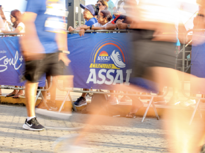
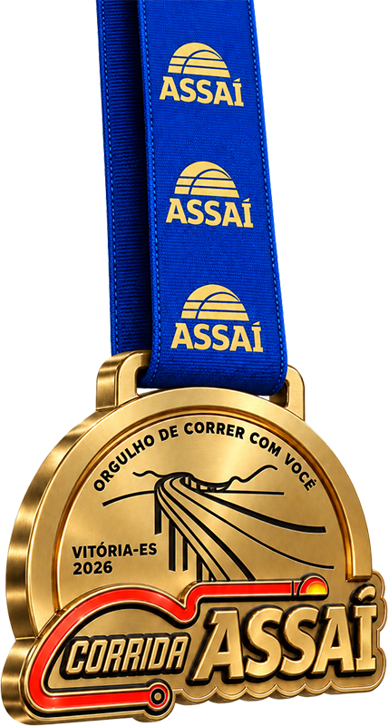

Foto: Shutterstock
Corridas de rua podem render bons negócios?
Descubra se a presença de atletas e espectadores representa uma oportunidade para vender alimentos e bebidas
Por: Vania Nocchi
No ano passado, o número de corridas de rua oficiais no Brasil cresceu 85% em relação ao ano anterior, segundo a Abraceo. Elas acontecem no asfalto e reúnem pessoas em busca de saúde, bem-estar e experiência.
Com provas em todos os estados, a corrida de rua se consolidou como um fenômeno democrático, que a entidade estima em cerca de 15 milhões de praticantes. Quando 2026 se encerrar, a Abraceo espera números ainda maiores.
A seguir, o que esse crescimento significa para quem vende alimentação e o que calcular antes de levar o negócio a uma prova.
PROVAS DE CORRIDA DE RUA NO BRASIL
2.827
provas em 2024.
FONTE: ABRACEO, PROVAS OFICIAIS, 2024 E 2025
Onde estão as oportunidades?
Com mais corridas de rua acontecendo pelo país, mais oportunidades de negócio podem surgir. E não é preciso ser patrocinador de uma prova para isso.
Para quem empreende, existem dois caminhos possíveis:
Dentro do evento
Vender alimentos e bebidas diretamente para participantes e acompanhantes, caso a organização permita a presença de comerciantes, ou negociar o fornecimento de produtos para a equipe organizadora.
Nas ruas próximas ao percurso
Trabalhar com comércio ambulante no entorno, desde que as regras municipais sejam respeitadas e as autorizações sejam obtidas.

Como encontrar corridas na sua região e descobrir se há espaço para o seu negócio? Comece por estes lugares.
Onde encontrar corridas de rua? Pesquise em:
- Calendários de provas disponíveis na internet
- Plataformas de inscrição
- Sites e redes sociais das organizadoras
- Páginas dedicadas à corrida de rua
- Publicações de órgãos municipais
Encontrou uma corrida de rua na sua região? Procure a organização para consultar as condições para vendedores e fornecedores.
A corrida combina com o seu negócio?
Seja para vender dentro do evento ou aproveitar a movimentação no entorno, você precisa identificar se a corrida de rua é uma boa oportunidade para o seu negócio.
Para isso, procure informações sobre:
Público esperado
Quantos atletas devem participar? Considere também o fato de que outras pessoas circulam pelo local durante o evento.
Localização
A prova acontece em uma área de fácil acesso e com boa circulação de pessoas?
Horário e duração
Que horas começa e termina a corrida de rua? O horário é adequado ao tipo de produto que você oferece?
Estrutura comercial
Existe uma área reservada para vendedores? Se sim, quais são as condições para ocupar esse espaço?
Regras de venda
Quais produtos podem ser comercializados? Há fornecedores exclusivos ou restrições para ambulantes?
IMPORTANTE: a venda dentro da área do evento depende da organização da corrida. Já para os espaços públicos, é a prefeitura quem autoriza.

Será que vale a pena?
Se você pretende vender diretamente ao público, precisa colocar os custos na ponta do lápis.
E a conta deve considerar as despesas para montar a operação e os gastos com cada produto.
1. Quanto custa participar?
Aqui entram os custos fixos, ou seja, as despesas que você terá independentemente da quantidade de produtos vendidos, como os custos para chegar ao local, montar a estrutura e manter o atendimento durante o evento.
Taxa de participação
A organização cobra pelo espaço ou pelo credenciamento de vendedores?
Transporte
Quanto vai custar o deslocamento de pessoas, mercadorias e equipamentos?
Estrutura
De quantas barracas, mesas, cadeiras, equipamentos e utensílios você vai precisar?
Mão de obra
Será preciso contratar ajudantes? Quanto vai custar a contratação de cada um?
Licenças e autorizações
Quais permissões serão necessárias? Haverá alguma cobrança?
Outras despesas
Será preciso pagar por energia elétrica, água ou outros serviços não oferecidos pela organização?

2. Quanto custa cada produto?
Além das despesas para participar da corrida, é preciso calcular o custo de preparo de cada produto, incluindo os ingredientes e embalagens. Considere também as despesas variáveis por venda, como taxas de cartão e comissões, que podem mudar conforme a forma de pagamento.
3. Quanto você precisa vender para cobrir os custos e ter lucro?
Por último, calcule a margem de contribuição de cada produto, ou seja, o valor que sobra de cada venda depois de descontar os custos e as despesas variáveis.
A fórmula para esse cálculo é:
MC = PV - CV - DV
MC: margem de contribuição;
PV: preço de venda do produto;
CV: custo variável unitário (quanto custa produzir);
DV: despesas variáveis por venda, como taxas de cartão e comissões.
Exemplo: Imagine que você venda um copo de açaí por R$ 15,00. Se o custo de preparo for R$ 6,00 e as despesas variáveis por venda somarem R$ 1,00, sua margem de contribuição será de R$ 8,00 por unidade.
Para calcular quantas unidades você precisa vender para atingir o ponto de equilíbrio, divida os custos da participação pela margem de contribuição de cada produto.
Se os custos da participação forem de R$ 800, por exemplo, será necessário vender 100 copos de açaí para cobrir essas despesas.
Depois de atingir o ponto de equilíbrio, a margem de contribuição das vendas seguintes representa o lucro do negócio.
Mas atenção: faça uma previsão realista!
Uma corrida com milhares de inscritos não significa milhares de clientes: parte dos participantes pode não passar pelo seu ponto de venda. Além disso, é possível que haja concorrência.
Por isso, antes de definir os detalhes da sua operação, calcule quantas unidades precisa vender para cobrir os custos e avalie se a meta é realista. Se a conta não fechar, talvez seja melhor rever os custos ou escolher outra corrida.

O Assaí também entra nessa corrida
-
2021
Desde 2021, o Assaí patrocina corridas de rua por todo o país. Desde então, a marca ampliou sua atuação no incentivo à prática e sua presença em grandes eventos esportivos.
-
2024
Em 2024, em comemoração aos 50 anos da empresa, criou o Circuito Assaí, com seis etapas em capitais brasileiras, entre novembro de 2024 e janeiro de 2025.
-
2025
Em 2025, foram três provas: Belo Horizonte (MG) e Belém (PA), em janeiro, e Fortaleza (CE), em dezembro, com mais de 7,5 mil inscritos no total.
-
2026
Em 2026, o circuito próprio também conta com três etapas: Vitória (ES), Teresina (PI) e Fortaleza (CE). Cada prova foi planejada para receber até 3 mil corredores adultos, além de crianças e pessoas com deficiência (PCD). Além do circuito, o Assaí patrocina cerca de 16 corridas de rua em diferentes regiões do país em 2026.
Para quem trabalha com alimentação, a corrida de rua pode ser uma boa oportunidade de venda, desde que o planejamento, as regras e as contas estejam em dia.
Confira Corridas Assaí